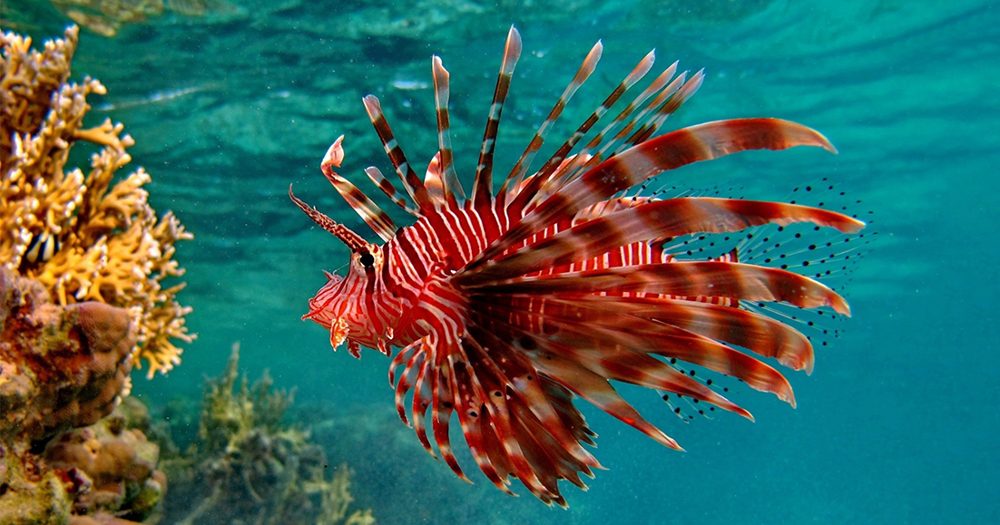

- Lionfish
| Scientific name | Pterois volitans |
|---|---|
| Habitat | Lionfish are found in mostly all marine habitat types found in warm marine waters of the tropics. Lionfish have been found in water depths from 1 to 300 feet on hard bottom, mangrove, seagrass, coral, and artificial reefs (like shipwrecks). |
| Diet | small fish, crustaceans (shrimp and crab) and other invertebrates. |